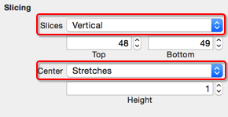

Popup选项菜单
目标
- 点击标题按钮，弹出选项菜单
说明
- 为了让功能解藕，弹出表格实际上是一个视图控制器
- 而弹出动作可以利用
UIPresentationController来实现
功能实现
基本功能实现
- 将素材中的
Popover目录拖入Images.xcassets - 设置图片的切片

由于 Xcode 6.3 点击
Show Slicing会闪退，直接在右侧工具栏设置即可
- 在
Home目录中新建Popover目录 - 新建
PopoverViewController继承自UIViewController - 在 Storyboard 中添加一个
UIViewController - 界面布局

- 设置自定义类和 Storyboard 标识符
- 设置自定义 Cell 可重用标识符
PopupCell - 设置表格的数据源为
PopoverViewController PopoverViewController代码
/// 好友分组
lazy var friendGroup: [String] = {
return ["首页", "好友圈", "群微博", "我的微博"];
}()
// MARK: - Table view data source
func tableView(tableView: UITableView, numberOfRowsInSection section: Int) -> Int {
return friendGroup.count;
}
func tableView(tableView: UITableView, cellForRowAtIndexPath indexPath: NSIndexPath) -> UITableViewCell {
let cell = tableView.dequeueReusableCellWithIdentifier("PopupCell", forIndexPath: indexPath) as! UITableViewCell
cell.textLabel?.text = friendGroup[indexPath.row]
return cell
}
- 修改
HomeTableViewController中标题按钮点击事件
/// 点击标题按钮
@IBAction func titleBtnClick() {
if !userLogon {
return
}
titleButton.selected = !titleButton.selected
let sb = UIStoryboard(name: "Home", bundle: nil)
let popover = sb.instantiateViewControllerWithIdentifier("PopoverController") as! PopoverViewController
presentViewController(popover, animated: true, completion: nil)
}
提示：使用
Storyoard ID可以在 Storyboard 中设置独立的视图控制器
- 运行测试

使用 UIPresentationController 接管 Modal
第1步：自定义 UIPresentationController
- 新建
PopoverPresentationController继承自UIPresentationController - 重写 init 函数
class PopoverPresentationController: UIPresentationController {
override init(presentedViewController: UIViewController!, presentingViewController: UIViewController!) {
// presentedViewController 是要 Modal 展现的视图控制器
super.init(presentedViewController: presentedViewController, presentingViewController: presentingViewController)
}
}
第2步：遵守 UIViewControllerTransitioningDelegate
- 在
HomeTableViewController中添加UIViewControllerTransitioningDelegate扩展
extension HomeTableViewController: UIViewControllerTransitioningDelegate {
func presentationControllerForPresentedViewController(presented: UIViewController, presentingViewController presenting: UIViewController!, sourceViewController source: UIViewController) -> UIPresentationController? {
// 返回自定义展现控制器
return PopoverPresentationController(presentedViewController: presented, presentingViewController: presenting)
}
}
第3步，修改 Modal 代码
let sb = UIStoryboard(name: "Home", bundle: nil)
let popover = sb.instantiateViewControllerWithIdentifier("PopoverController") as! PopoverViewController
// 设置转场动画代理
popover.transitioningDelegate = self
// 设置 Modal 展现样式
popover.modalPresentationStyle = UIModalPresentationStyle.Custom
presentViewController(popover, animated: true, completion: nil)
运行测试，使用视图层次结构查看前后两种 Modal 的实际运行效果
结论：
- 默认情况下，
Modal展现视图控制器会将之前的视图控制器移出 - 而使用
UIPresentationController可以同时保留两个视图控制器的视图，从而能够达到弹窗的效果
UIPresentationController是 iOS 8.0 新推出的专门封装 Modal 转场动画的控制器
UIPresentationController的重要概念containerView容器视图presentedView()Modal 展现的视图presentedViewControllerModal 展现的视图控制器
设置 Modal 控制器大小
- 在
PopoverPresentationController中重写containerViewWillLayoutSubviews方法
/// 容器视图将要布局子视图
override func containerViewWillLayoutSubviews() {
super.containerViewWillLayoutSubviews()
presentedView().frame = CGRectMake(100, 56, 200, 300)
}
运行测试
- 修改
Home.Storyboard- 取消表格分隔线
- 设置
表格&Cell的背景颜色为cleanColor
下一目标 —— 点击空白位置关闭视图控制器
点击空白位置关闭视图控制器
- 定义遮罩视图属性
/// 遮罩视图
lazy var dummingView: UIView = {
let v = UIView()
v.backgroundColor = UIColor(white: 0, alpha: 0.2)
return v
}()
- 在实例化函数中准备遮罩视图
override init(presentedViewController: UIViewController!, presentingViewController: UIViewController!) {
// presentedViewController 是要 Modal 展现的视图控制器
super.init(presentedViewController: presentedViewController, presentingViewController: presentingViewController)
// 准备遮罩视图
prepareDummingView()
}
- 准备遮罩视图
/// 遮罩视图
lazy var dummingView: UIView = {
let v = UIView()
v.backgroundColor = UIColor(white: 0, alpha: 0.2)
let tap = UITapGestureRecognizer(target: self, action: "clickDummingView")
v.addGestureRecognizer(tap)
return v
}()
/// 点击遮罩视图
func clickDummingView() {
presentedViewController.dismissViewControllerAnimated(true, completion: nil)
}
init的时候，containerView还没有被创建
- 在
presentationTransitionWillBegin方法中添加遮罩视图 - 此方法是转场开始之前被调用，此时
containerView已经建立
/// 转场开始之前，插入遮罩视图
override func presentationTransitionWillBegin() {
dummingView.frame = containerView.bounds
containerView.insertSubview(dummingView, atIndex: 0)
}
运行测试
- 修改
clickDumming()函数，关闭视图控制器
/// 遮罩视图点击方法
func clickDumming() {
println(__FUNCTION__)
// 关闭 Modal 的控制器
presentedViewController.dismissViewControllerAnimated(true, completion: nil)
}
下一目标 —— 自定义转场动画
自定义转场动画
- 在
HomeTableViewController的UIViewControllerTransitioningDelegate实现以下方法，指定负责展现转场动画的对象
/// 指定负责 `展现` 转场动画的对象
func animationControllerForPresentedController(presented: UIViewController, presentingController presenting: UIViewController, sourceController source: UIViewController) -> UIViewControllerAnimatedTransitioning? {
return self
}
- 实现
UIViewControllerAnimatedTransitioning协议方法
extension HomeTableViewController: UIViewControllerAnimatedTransitioning {
/// 转场动画时间
func transitionDuration(transitionContext: UIViewControllerContextTransitioning) -> NSTimeInterval {
return 0.5
}
/// 自定义转场动画
func animateTransition(transitionContext: UIViewControllerContextTransitioning) {
}
}
运行测试，通过视图层次结构可以看到，一旦实现了以上代理方法，要展现视图的出现需要程序员负责
转场上下文
transitionContext定义了转场时需要的元数据，比如在转场过程中所参与的视图控制器和视图的相关属性- 重要属性
- 来源视图
- 来源视图控制器
- 目标视图
- 目标视图控制器
重要方法
completeTransition通知转场动画完成
自定义转场动画方法
/// 自定义转场动画
func animateTransition(transitionContext: UIViewControllerContextTransitioning) {
let fromVC = transitionContext.viewControllerForKey(UITransitionContextFromViewControllerKey)
let fromView = fromVC?.view
let toVC = transitionContext.viewControllerForKey(UITransitionContextToViewControllerKey)
println("fromVC \(fromVC) toVC \(toVC)")
if let toView = toVC?.view {
transitionContext.containerView().addSubview(toView)
transitionContext.completeTransition(true)
}
}
运行测试
dismiss 动画
- 在
HomeTableViewController的UIViewControllerTransitioningDelegate实现以下方法，指定负责消失转场动画的对象
/// 指定负责 `消失` 转场动画的对象
func animationControllerForDismissedController(dismissed: UIViewController) -> UIViewControllerAnimatedTransitioning? {
return self
}
- 实现了此代理方法之后，同样会调用之前的
animateTransition函数 - 为了更方便地区分是
展现还是消失，可以定义一个属性记录 - 在
HomeTableViewController中定义一个属性
// 是否展现标记
var isPresenting = false
- 在
展现/消失代理函数中增加标记设置
/// 指定负责 `展现` 转场动画的对象
func animationControllerForPresentedController(presented: UIViewController, presentingController presenting: UIViewController, sourceController source: UIViewController) -> UIViewControllerAnimatedTransitioning? {
isPresenting = true
return self
}
/// 指定负责 `消失` 转场动画的对象
func animationControllerForDismissedController(dismissed: UIViewController) -> UIViewControllerAnimatedTransitioning? {
isPresenting = false
return self
}
- 处理动画函数
/// 自定义转场动画
func animateTransition(transitionContext: UIViewControllerContextTransitioning) {
if isPresenting {
let toView = transitionContext.viewForKey(UITransitionContextToViewKey)!
transitionContext.containerView().addSubview(toView)
} else {
let toView = transitionContext.viewForKey(UITransitionContextFromViewKey)!
toView.removeFromSuperview()
}
transitionContext.completeTransition(true)
}
运行测试
- 添加动画代码
func animateTransition(transitionContext: UIViewControllerContextTransitioning) {
if isPresented {
let toView = transitionContext.viewForKey(UITransitionContextToViewKey)!
transitionContext.containerView().addSubview(toView)
toView.transform = CGAffineTransformMakeScale(1.0, 0)
toView.layer.anchorPoint = CGPointMake(0.5, 0)
UIView.animateWithDuration(transitionDuration(transitionContext),
delay: 0,
usingSpringWithDamping: 0.8,
initialSpringVelocity: 5.0,
options: nil,
animations: {
toView.transform = CGAffineTransformMakeScale(1.0, 1.0)
}, completion: { (_) in
toView.transform = CGAffineTransformIdentity
transitionContext.completeTransition(true)
})
} else {
let fromView = transitionContext.viewForKey(UITransitionContextFromViewKey)!
fromView.removeFromSuperview()
transitionContext.completeTransition(true)
}
}
在本演练中，其实不加动画效果反而更好！有关
UIPresentationController的使用，后续课程还会遇到